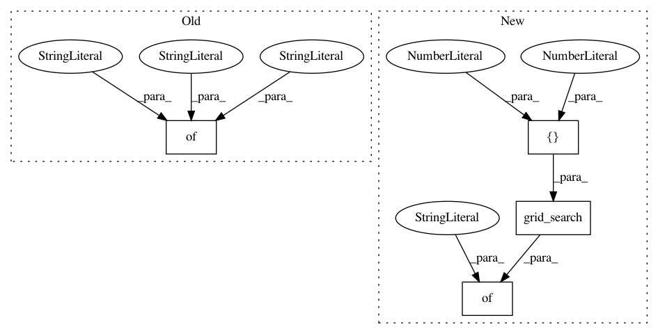

86cff17e7ef1b355e1ab4862ccd664ed4c856227,python/ray/util/sgd/torch/examples/tune_example.py,,tune_example,#Any#Any#,59
Before Change
def tune_example(num_workers=1, use_gpu=False):
config = {
"model_creator": model_creator,
"data_creator": data_creator,
"optimizer_creator": optimizer_creator,
"loss_creator": nn.MSELoss,
"num_workers": num_workers,
"use_gpu": use_gpu,
"config": {"batch_size": 512 // num_workers},
"backend": "gloo"
}
analysis = tune.run(
TorchTrainable,
num_samples=12,
After Change
analysis = tune.run(
TorchTrainable,
num_samples=3,
config={"lr": tune.grid_search([1e-4, 1e-3])},
stop={"training_iteration": 2},
verbose=1)
In pattern: SUPERPATTERN
Frequency: 3
Non-data size: 4
Instances
Project Name: ray-project/ray
Commit Name: 86cff17e7ef1b355e1ab4862ccd664ed4c856227
Time: 2020-03-30
Author: rliaw@berkeley.edu
File Name: python/ray/util/sgd/torch/examples/tune_example.py
Class Name:
Method Name: tune_example
Project Name: rail-berkeley/softlearning
Commit Name: 92be5e2d7ece8c25a783e32959361d9dead612ba
Time: 2018-08-25
Author: kristian.hartikainen@gmail.com
File Name: examples/variants.py
Class Name:
Method Name: get_variant_spec_image
Project Name: rail-berkeley/softlearning
Commit Name: 0e49e55d906660e5c9168447c77ebc6d917dda5c
Time: 2018-10-22
Author: hartikainen@berkeley.edu
File Name: examples/development/variants.py
Class Name:
Method Name: get_variant_spec